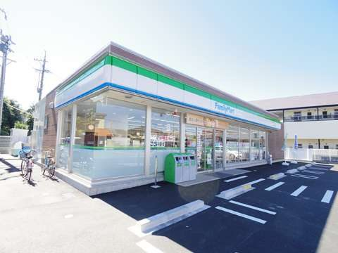
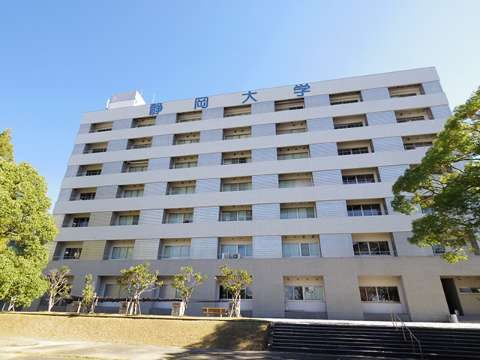
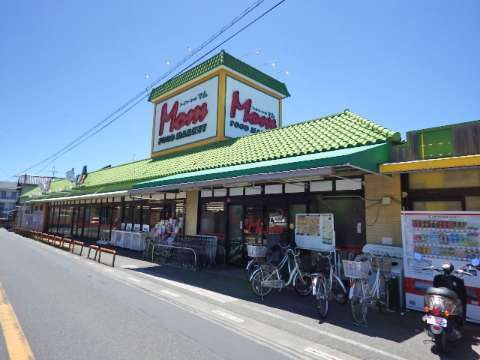
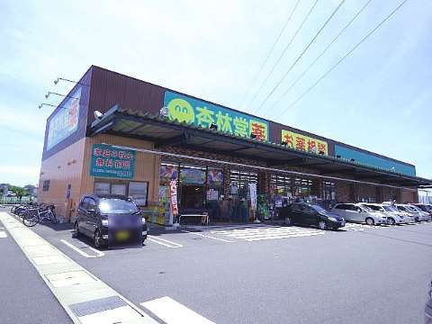
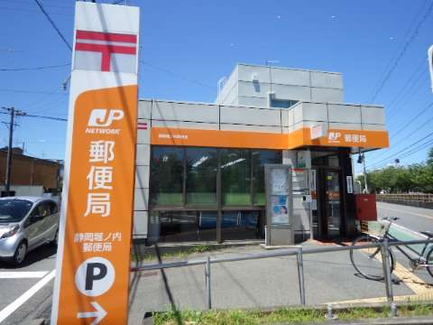
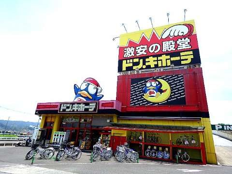

FULLY OCCUPIED
空き待ちを登録する
現在満室です。空き待ちを受付中。
退去は例年1月〜3月に集中します。新年度からの入居をご希望の方は、早めに空き待ちをご登録ください。空きが出しだい管理会社からご連絡します。
CONCEPT
静岡キャンパス（駿河区大谷836）の目の前。朝の1限も、研究室やサークルで遅くなった夜も、すぐに部屋へ帰れます。
オンライン授業もレポートも、自分の部屋で。利用料はかからないので、自分で回線を契約する必要も、毎月の通信費もありません。
近隣では数少ないRC造3階建・全21戸。新耐震基準で建てられ、2026年3月には外壁塗装とタイル工事を終えました。
SAFETY · FOR PARENTS
はじめての一人暮らしで、ご両親がいちばん心配されるのは、建物の丈夫さ、災害に強い立地、そして帰り道の安全です。ヒルズ・セイキュウは、そのすべてにまっすぐ応える住まいです。
30sec
大学まで、歩いて約30秒
敷地から静岡大学の敷地まで約40m（分速80mで約30秒）。不動産広告の表示基準では「徒歩1分」となります。
木造や軽量鉄骨のアパートが多い大谷エリアで、RC造3階建。揺れや強風、外の音に強いとされる構造です。
現行の新耐震基準に沿って設計・建築されています。東海地震への備えが求められる静岡で、構造から選べる安心です。
外壁塗装とタイル工事を終え、雨風から建物を守る外装を一新しました。台風の多い季節も、手入れの行き届いた建物で過ごせます。
国のハザードマップで、津波の浸水が想定されている区域の外にあります。駿河区で想定される最高津波水位（海抜約12m）を大きく上回る高台です。
研究室やサークル、図書館での勉強で帰りが遅くなっても、キャンパスを出ればすぐに部屋。暗い道をひとりで長く歩かずに済むので、女子学生にも選ばれています。
津波の想定は、国土交通省「重ねるハザードマップ」（想定最大規模）で確認したものです（2026年10月時点）。災害時は静岡市の避難情報に従ってください。入居後に困ったときの窓口は、管理会社の山晃住宅（エイブルネットワーク静岡南店）です。
STUDY · TIME PERFORMANCE
バスや電車を待つ時間も、満員の車内で過ごす時間もありません。浮いた時間は、予習・復習にも、研究にも、資格の勉強にも、アルバイトや睡眠にも使えます。タイパ最強の通学です。
約500時間
4年間で生まれる自由な時間
大学院まで進めば、6年間で約750時間に。
試算：静岡駅周辺からバスで通う場合（片道約25分）と比べ、往復50分×週5日×年30週×4年。待ち時間や乗り換えは含みません。
バスの時刻に合わせて早起きする必要はありません。朝食をとって、頭がはっきりした状態で授業に出られます。
授業の合間に部屋へ戻って、課題を進めたり、昼食をとったり。図書館や研究室にも、思い立ったらすぐに向かえます。
オンライン授業、レポート提出、調べもの。部屋がそのまま学習スペースになります。
外の音が伝わりにくいとされる鉄筋コンクリート造。試験前やレポートの締切前も、自分の部屋で集中できます。
※写真はイメージです（物件・周辺の写真ではありません）。Photos: Unsplash
ROOMS
退去は例年1月〜3月に集中します。新年度からの入居をご希望の方は、早めに空き待ちをご登録ください。空きが出しだい管理会社からご連絡します。
1階から3階まで、中部屋と角部屋（各階1号室・8号室）があります。
RENT
賃料・共益費・初期費用は、管理会社へお問い合わせください。
お部屋の階や向き、ご入居の時期に合わせてご案内します。
OUTLINE
駐車場は、ご入居者以外の方の月極契約もご相談いただけます。
LIFE IN OYA
日本平のふもと、静岡大学を中心とした学生の街。キャンパスへは歩いて、静岡駅へはバスで。敷地内には駐車場が8台分あり、日本平久能山スマートICまでは車で約5分。車があれば、行動範囲がぐっと広がります。IC周辺の宮川・水上地区では約47ヘクタールの大規模な開発が進んでおり、これからますます便利になる街です。
静岡キャンパス
駿河区大谷836・人文社会科学部、教育学部、理学部、農学部、グローバル共創科学部
JR静岡駅 → 静岡大学
静岡駅北口バスターミナル8番乗場から「静岡大学」「片山」下車・約25分
日本平久能山スマートIC
車で約5分・東名高速に直結
敷地内に駐車場8台
部屋のすぐ前に停められます
日本平久能山スマートICへ
車で約5分・東名高速に直結。周辺で大規模開発が進行中
部活の遠征や、サークルの合宿、アルバイトへの移動、週末の帰省まで。アクティブなキャンパスライフにも応えます。
周辺には、ファミリーマート 静岡大学前店、フードマーケットMom 小鹿店、杏林堂薬局 静岡小鹿店、ドン・キホーテパウ SBS通り店など。
NEARBY






写真提供：エイブルネットワーク静岡南店
MESSAGE
静岡大学の目の前で、たくさんの学生さんの学生生活を見守ってきた建物です。大学院へ進み、6年間住み続ける方も多く、途中で住み替える方はほとんどいません。鉄筋コンクリートの丈夫さに甘えず、外壁の塗装やタイルの改修など、手入れを続けています。通学に時間がかからない分、その時間を勉強にも、サークルにも、アルバイトにも使ってください。ご家族の方にも安心していただける住まいであり続けます。
Blue Aegis株式会社
ACCESS
静岡県静岡市駿河区大谷
JR静岡駅からバス約25分「静岡大学」「片山」下車
最寄りバス停から徒歩約3分
CONTACT
このサイトは、ヒルズ・セイキュウの運営に携わるBlue Aegis株式会社が作成しています。内見・ご契約と、賃料・空室状況などの詳細は、管理会社の山晃住宅（エイブルネットワーク静岡南店）にご確認ください。「ヒルズ・セイキュウのサイトを見た」とお伝えいただくとスムーズです。
店舗：静岡市駿河区南町14-25 エスパティオ1F（JR静岡駅南口から徒歩1分）
営業時間：9:45〜18:30 定休日：水曜日（祝日は営業）